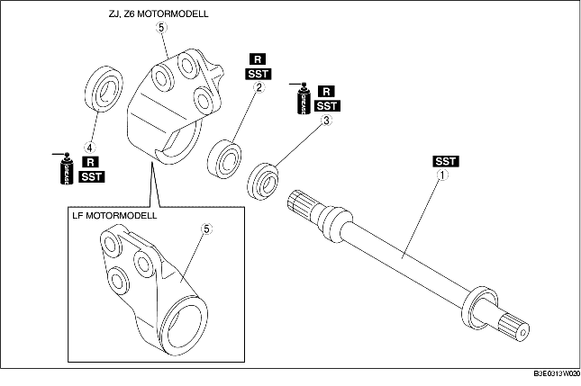

1. Demontera i den ordning som tabellen anger.
2. Sätt ihop i omvänd ordning jämfört med isärtagningen.

.
1. Demontera mellanaxeln med hjälp av en press.
1. Demontera lagret och dammkåpan (höger/vänster) med hjälp av specialverktygen.
2. Om lagret sitter kvar på mellanaxeln, placera specialverktyget och mellanaxeln på pressen.
1. Sätt fett på läppen på en ny dammtätning.
2. Montera dammtätningen (höger) med hjälp avspecialverktygen.
1. Montera ett nytt lager med specialverktygen.
1. Sätt fett på läppen på en ny dammtätning.
2. Montera en ny dammtätning (vänster) med hjälp av stålplattan och specialverktygen.
1. Tryck på mellanaxeln med hjälp av specialverktyget och en press.